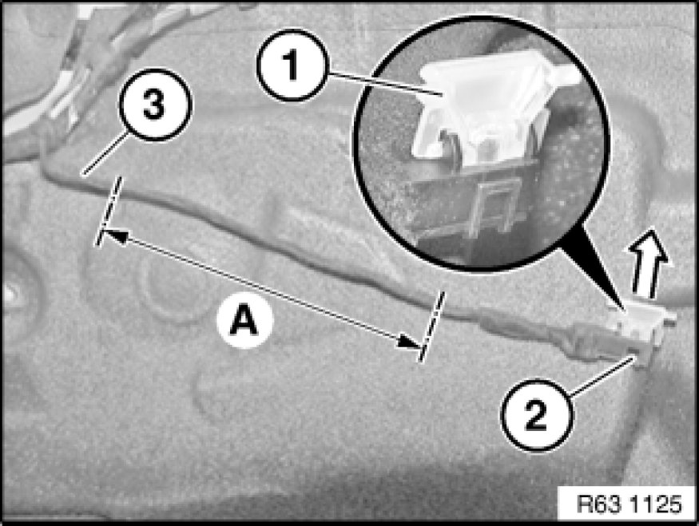

Replacing LED for Front Inside Door Opener
63 31 182 - Replacing LED for front inside door opener

Necessary preliminary tasks:
- Remove door trim panel

Unclip optical element (1) in direction of arrow from LED for door opener (2).
Remove sheathing of wiring harness (3) in area (A).
Cut through wiring harness (3) in area (A).
Installation:
Adapt length of wiring harness of new LED for door opener.
Connect wiring harness of new LED using butt connectors 61 13 ... Butt Connector For Repairing A Plug Connection to wiring harness (3).
Wrap wiring harness (3) in insulating tape.